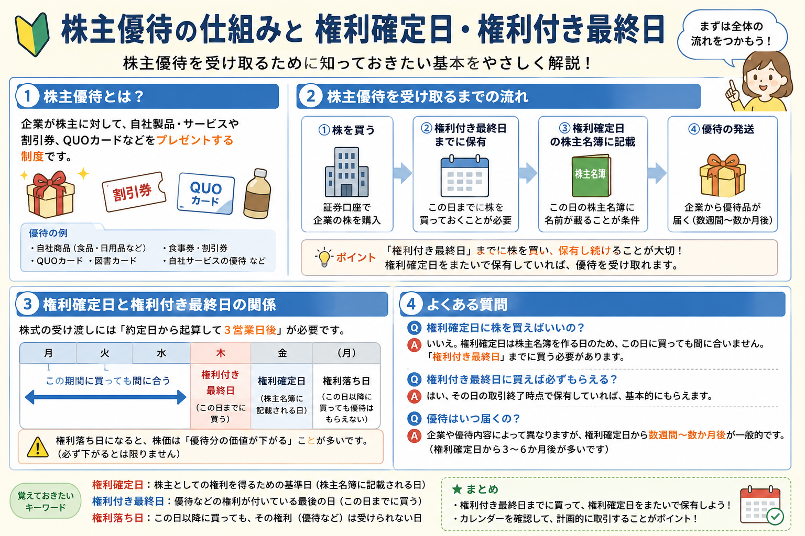

投資の基礎知識
株主優待とは？権利確定日やもらえる仕組みを初心者向けに解説
株主優待は、企業が一定の条件を満たす株主へ商品やサービス券などを提供する制度です。魅力的に見える一方、株を買えばすぐにもらえるわけではなく、権利確定日、権利付き最終日、最低保有株数、保有期間などの条件を確認する必要があります。この記事では、8月の株主優待シーズンを含め、毎年使える基礎知識として仕組みと注意点を整理します。
Overview
株主優待の仕組みと日付の関係を最初に整理

- 株主優待は、すべての上場企業が実施している制度ではありません。
- 優待を受け取るには、必要株数や保有期間など企業ごとの条件を満たす必要があります。
- 権利確定日当日に買うのでは遅く、通常は権利付き最終日までに購入します。
- 優待の価値だけでなく、株価下落や制度変更の可能性も考えることが大切です。
Definition
株主優待とは？
株主優待とは、企業が自社の株式を保有する株主へ、商品やサービスなどの特典を提供する制度です。株主への還元や、自社の商品・サービスを知ってもらうこと、長期保有を促すことなどを目的として導入される場合があります。
株主優待の仕組み
企業が定めた条件を満たす株主へ提供
企業は「基準日時点で100株以上」「1年以上継続保有」などの条件を決めます。その条件を満たした株主に、優待品や案内が後日送られます。
どのような優待があるのか
商品・券・ポイントなど内容はさまざま
自社商品、食事券、買い物券、施設利用券、割引券、カタログギフト、ポイントなどがあります。内容や利用期限、利用できる店舗は企業ごとに異なります。
任意の制度
実施・継続が保証されているわけではない
株主優待は法律で一律に義務付けられた制度ではありません。企業の判断で新設、変更、休止、廃止されることがあります。
配当金との違い
株主優待と配当金は、どちらも株主還元として扱われることがありますが、仕組みは別です。配当金は企業が利益などをもとに株主へ現金を分配するものです。一方、株主優待は商品やサービスなどの特典が中心で、実施しない企業もあります。
| 比較項目 | 株主優待 | 配当金 |
|---|---|---|
| 受け取るもの | 商品、サービス券、割引券、ポイントなど | 現金 |
| 実施状況 | 実施しない企業もある | 無配の企業や年度もある |
| 主な条件 | 最低保有株数、継続保有期間など | 基準日時点の保有株数など |
| 内容の変更 | 変更・廃止される場合がある | 業績や方針により増配・減配・無配がある |
| 初心者の確認点 | 利用条件や自分にとっての実用性を確認 | 配当利回りだけでなく継続性も確認 |
※ スマートフォンでは横にスクロールできます。
株主優待と配当金の両方を実施する企業もあれば、どちらか一方だけの企業、どちらも実施しない企業もあります。優待の有無だけで企業価値が決まるわけではありません。
Record Date
権利確定日とは？
権利確定日とは、株主優待や配当などを受け取る株主を企業が確定する基準日です。株主優待を受けるには、原則として権利確定日に株主名簿へ記載されている必要があります。
購入期限
権利付き最終日
優待の権利を得るために株式を購入できる最終売買日です。一般的な国内上場株式では、権利確定日の2営業日前にあたります。
権利なしで取引開始
権利落ち日
権利付き最終日の翌営業日です。この日に購入しても、今回の株主優待や配当の権利は原則として得られません。
株主を確定
権利確定日
企業が株主名簿を確認し、優待などを受け取る株主を確定する日です。月末以外を基準日とする企業もあります。
| 日程 | 名称 | この日に買った場合 | 初心者が覚えるポイント |
|---|---|---|---|
| 権利確定日の2営業日前 | 権利付き最終日 | 原則として今回の権利を取得できる | 購入する最終期限 |
| 権利確定日の1営業日前 | 権利落ち日 | 原則として今回の権利は取得できない | この日から権利なしの売買になる |
| 基準日 | 権利確定日 | 当日購入では通常間に合わない | 株主名簿上の株主を確定する日 |
※ スマートフォンでは横にスクロールできます。
日付は毎回確認： 土日・祝日を挟む場合や、月末以外を権利確定日とする企業では、実際の日付が変わります。証券会社の権利確定日カレンダーや企業の公式IR情報で確認してください。
なぜ購入するタイミングが重要なのか
株式の売買が成立した日と、株主名簿上の名義が確定する日は同じではありません。国内上場株式の通常の受け渡しには時間がかかるため、権利確定日より前の権利付き最終日までに購入する必要があります。
権利付き最終日に買い、権利落ち日以降に売却しても、通常は今回の権利を取得できます。ただし、権利落ち日には配当や優待への期待分が意識され、株価が下落する場合があります。短期間で売れば必ず得になるわけではありません。
How It Works
株主優待を受け取る流れ
株主優待は、株式を購入した直後に届くものではありません。企業が株主を確定し、発送や申込みの準備を行うため、受け取りまで数か月かかる場合があります。
必要株数、権利確定日、継続保有条件を確認します。
権利付き最終日までに必要株数を購入します。
権利確定日に株主名簿へ記載されます。
企業が定める時期に郵送や電子方式で届きます。
期限や申込方法を確認して利用します。
株式を購入する
証券口座から対象企業の株式を購入します。多くの国内株は100株を1単元としていますが、優待の必要株数が100株とは限りません。200株、500株、1,000株など複数の区分を設ける企業もあります。
権利を取得する
権利付き最終日までに必要株数を購入し、権利確定日に条件を満たしていれば対象株主となります。継続保有条件がある場合、一度だけ基準日に保有しても対象にならないことがあります。
優待が届くまで待つ
優待品の発送時期は企業ごとに異なります。株主総会後に送られる場合や、申込書から希望商品を選ぶ場合、専用サイトで手続きする場合などがあります。
企業ごとの条件を確認する
同じ企業でも、保有株数や保有期間によって優待内容が変わることがあります。毎年同じ条件とは限らないため、権利取得前に最新の公式IR情報を確認することが重要です。
8月の株主優待シーズン： 2月・3月・8月・9月などを権利確定月とする企業が多く話題になりやすい時期があります。ただし、8月末ではなく8月20日などを基準日とする企業や、年1回・年2回など回数が異なる企業もあるため、「8月優待」という月だけで判断しないようにしましょう。
Benefits
株主優待のメリット
株主優待には、投資による値上がり益や配当金とは異なる楽しみがあります。ただし、メリットの大きさは、優待を実際に使うかどうかや投資金額によって変わります。
商品やサービスを受け取れる場合がある
自社商品や買い物券など、企業の事業と関係する特典を受け取れる場合があります。普段から利用する商品や店舗なら、実用性を感じやすくなります。
投資への興味を持ちやすい
優待をきっかけに企業の商品、店舗、サービス、決算へ関心を持ち、株式投資の仕組みを学びやすくなることがあります。
長期保有特典がある企業もある
一定期間以上の継続保有で内容を充実させる企業もあります。長期保有を考えるきっかけになりますが、特典だけで保有を続ける必要はありません。
優待券の額面が高く見えても、自分が利用しない商品や遠方の店舗しか使えない券なら、実際の価値は小さくなります。金額だけでなく、利用しやすさや有効期限も確認しましょう。
Risks & Cautions
株主優待の注意点
株主優待は必ず得をする制度ではありません。株式投資である以上、優待の価値とは別に株価変動リスクがあります。
変更・廃止
優待内容は将来変わる可能性がある
企業の業績、コスト、株主還元方針、株主数の変化などにより、内容の縮小、条件変更、廃止が行われることがあります。
株価下落
優待価値以上の損失が出る場合がある
数千円相当の優待を受け取っても、株価が大きく下がれば投資全体では損失になります。元本は保証されません。
権利落ち
権利取得後に株価が下がることがある
権利落ち日には、配当や優待の権利がなくなることを意識した売買で株価が下落する場合があります。権利取りだけで利益が確定するわけではありません。
条件確認
最低保有株数や保有期間が異なる
100株以上、半年以上、1年以上など条件は企業ごとに異なります。株主番号の継続や複数回の名簿記載を条件とする場合もあります。
利用期限
使わなければ価値を得られない
優待券やポイントには期限が設定される場合があります。利用場所や対象商品に制限があることもあります。
投資判断
優待だけを目的に判断しない
企業の売上、利益、財務状況、将来性、株価水準、配当方針なども確認し、優待は判断材料の一つとして考えましょう。
Beginner Checklist
初心者が知っておきたいポイント
株主優待を調べるときは、「何がもらえるか」だけでなく、日付、必要資金、条件、企業の状態を順番に確認すると判断しやすくなります。
-
権利確定日だけでなく権利付き最終日も確認する
実際の購入期限は権利確定日より前です。休日を挟むと日付がずれるため、毎回カレンダーを確認します。
-
最低保有株数と継続保有条件を確認する
100株必要なのか、1株でも対象なのか、半年・1年以上の保有が必要なのかを企業の公式情報で確認します。
-
配当金と優待は別の制度と理解する
優待があっても配当がない場合や、配当があっても優待がない場合があります。両方を分けて確認します。
-
優待の実用性を自分の生活で考える
額面だけでなく、利用できる地域、店舗、商品、有効期限、送料や申込手続きも確認します。
-
必要投資額と優待価値を比べる
優待を得るために多額の資金が必要な場合があります。優待利回りだけでなく、資金を集中させるリスクも考えます。
-
長期的な資産形成も意識する
短期の優待取得だけでなく、企業が長期的に利益を生み、株主へ還元できるかを確認することが大切です。
- 企業公式サイトの「株主優待」「株主還元」「IR情報」を確認する
- 権利確定月だけでなく、具体的な基準日を確認する
- 優待新設・変更・廃止のお知らせが出ていないか確認する
- 株価が上昇した後に慌てて買わない
- 一つの優待銘柄へ資金を集中させすぎない
Related Articles
株主優待と一緒に確認したい基礎知識
株主優待を投資判断へ取り入れる前に、株式投資、配当、少額投資、長期投資、新NISAの基本も確認しておくと理解が深まります。
FAQ
株主優待に関するよくある質問
-
株主優待とは何ですか？
株主優待とは、企業が一定の条件を満たす株主へ、自社商品、サービス券、割引券、ポイントなどを提供する制度です。実施の有無や内容、必要株数、保有期間は企業ごとに異なります。 -
権利確定日とは何ですか？
権利確定日とは、株主優待や配当などを受け取る株主を企業が確定する基準日です。通常は権利確定日に株主名簿へ記載されている必要があります。 -
権利付き最終日との違いは？
権利付き最終日は、株主優待などの権利を得るために株式を購入できる最終売買日です。一般的な国内上場株式では、権利確定日の2営業日前が権利付き最終日となり、その翌営業日が権利落ち日です。休日や銘柄ごとの基準日により日付は変わるため、毎回確認してください。 -
1株でも株主優待はもらえますか？
多くの株主優待は100株以上などの条件がありますが、1株保有を対象とする企業もあります。単元未満株では優待対象外となる場合も多いため、企業の公式情報で最低保有株数を確認してください。 -
株主優待だけを目的に投資しても良いですか？
株主優待は投資判断の一材料ですが、優待内容は変更・廃止される場合があり、株価下落による損失が優待価値を上回ることもあります。業績、財務状況、株価水準、配当方針なども確認することが大切です。
Summary
まとめ｜株主優待は条件と日付を確認して判断しよう
- 株主優待は、企業が一定の条件を満たす株主へ提供する商品やサービスなどの特典です。
- 権利確定日に株主名簿へ記載されるには、通常は権利付き最終日までに株式を購入する必要があります。
- 権利付き最終日の翌営業日が権利落ち日となり、この日に購入しても今回の権利は原則として得られません。
- 株主優待と配当金は別の制度で、実施状況や受け取り内容も異なります。
- 優待内容だけでなく、企業の業績、財務状況、株価水準、将来性も確認して投資判断を行うことが重要です。
Next Step
株式投資と証券口座の基本も確認する
株主優待をきっかけに株を始める場合も、株価変動リスク、必要資金、注文方法、NISAの扱いなどを確認してから判断することが大切です。
ご利用にあたっての注意事項
本記事は一般的な情報提供と金融教育を目的としており、特定の企業・銘柄・株主優待・証券会社の推奨や、投資の勧誘を目的としたものではありません。株式などの金融商品は元本保証がなく、相場変動、企業業績、信用状況、制度変更などにより損失が生じる場合があります。株主優待の内容、権利確定日、必要株数、継続保有条件、発送時期などは変更される場合があるため、取引前に企業および証券会社の最新の公式情報を確認し、ご自身の判断と責任で行ってください。